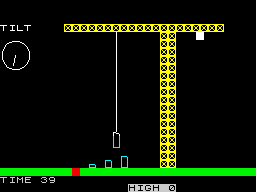
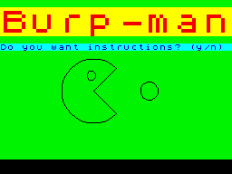

|
You can count the number of remakes of the popular classics on all of your digits, but on the crap side of the coin hundreds of new games (call them updates if you wish) by programmers with an incredible crapacity for scraping the barrel of naffness have been entered into a competition.
Yes.
A competition.
The comp.sys.sinclair Crap Games Competition (CSSCGC).
And it's great.
Since winning the Speccy Tour 2000 (shameless plug) (You were lucky, that's all. Nat) I have brushed aside the classics and dived headlong into a deep and delightful bucket of crap: games with no redeeming features other than attempting to be as bad as possible.
Since 1996 it has been an annual event that grips the land. So much interest has been generated that it is surprising the BBC have not procured the live broadcasting rights because, believe me, it would make riveting viewing.
1996 brought us Burpman, a Pacman clone that I have never actually played, simply because I cannot be bothered to wait for the playing field to be drawn. We were also introduced to the delights of Build That Tower, a rivetingly realistic crane simulator. Nothing, however, can match the brilliance of the Dark Room Simulator which needs no further description. Another effort is Tetris, The Text Adventure which involves you standing in a cave, with oddly shaped pieces falling from the roof, and all of your commands must be typed in lowercase. Brilliant
|